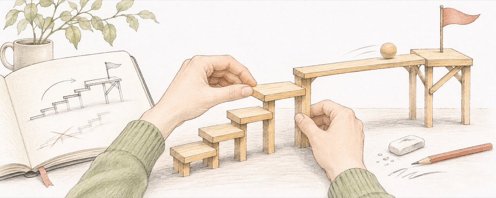

From understanding to action

Using AI ends up holding a mirror up to how I work myself. I hand an agent a problem and expect it to figure out a plan, grab the right tools, check its own output, and adjust. The same questions apply to me: how does what I’m doing right now connect to my goal, and when new evidence comes in, does my next step change?
To me, intelligence is the ability to achieve a goal. Knowing a lot and thinking deeply are great, as long as they eventually show up in what you do. What I care about most is whether the thing I built solved the problem I started with.
Question the goal, too
Before I dive in, I try to spell out what I’m hoping to change. If a question is worth studying, what important gap in understanding am I trying to close? If a tool is worth building, where does the existing way of doing things break down? Having a concrete target makes it much easier to pick a method, and to catch myself when I start drifting.
That said, the starting goal isn’t carved in stone. Once you get your hands dirty, you often realize your initial framing was too vague, or the bottleneck sits somewhere else entirely. Admitting that usually means picking a better question, not polishing a flawed plan.
Control systems are a handy way to think about this. Any control loop needs a target and feedback on what its actions did. Applied to personal work, that’s what notes, checks, and reviews are for: making sure the next move takes into account what just happened. It’s a useful mental model, though it won’t tell you whether a goal is worth chasing in the first place.
I try to switch back and forth between being deep in the work and stepping back to look at it. In the middle of execution, you push forward. Looking back, you ask which assumptions no longer hold and which routines are running on autopilot. Sometimes you keep going, sometimes you switch tactics, and sometimes the right call is to stop.
Taking initiative also means owning those calls. AI can brainstorm plans, write the code, and flag what I missed. Whether I ship the result, or keep pouring time into it, still comes down to my goal and what happened in reality.